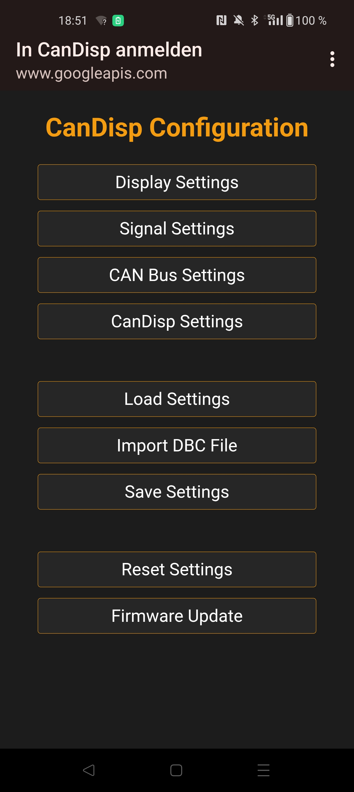
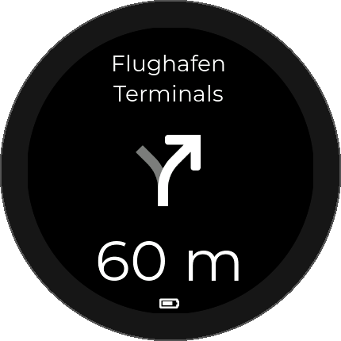

Diese Dokumentation enthält zur Zeit nur die aller ersten Schritte und Hinweise zur Inbetriebnahme. Es wird dringend empfohlen die Bedienungsanleitung zu lesen, welche im Downloadbereich verfügbar ist.
Verbinde die schwarze Leitung des CanDisp-Geräts mit Masse (GND) und die rote Leitung mit einer geschalteten Gleichspannungsquelle.
Es wird empfohlen, eine Versorgung zu verwenden, die gemeinsam mit dem Fahrzeug oder dem übergeordneten System ein- und ausgeschaltet wird.
Nach dem Einschalten der Versorgungsspannung startet das Gerät automatisch.
Achtung: Eine Überschreitung des zulässigen Spannungsbereichs kann zur Beschädigung des Geräts führen.
Verbinde die weiße Leitung des CanDisp-Geräts mit CAN Low (CAN_L) und die grüne Leitung mit CAN High (CAN_H) des CAN-Netzwerks.
Das Gerät arbeitet als passiver CAN-Bus Listener und sendet selbst keine CAN-Nachrichten. Bestehende Steuergeräte werden dadurch nicht beeinflusst.
Das CanDisp-Gerät stellt einen eigenen WLAN Access Point bereit, über den die Konfiguration des Geräts erfolgt.
Verbinde dich mit dem WLAN-Netzwerk des Geräts und öffne anschließend die Konfigurationsoberfläche im Webbrowser.
Über die Weboberfläche können unter anderem folgende Einstellungen vorgenommen werden:
Weitere Informationen befinden sich in der Bedienungsanleitung.

CanDisp kann Turn-by-Turn Navigationshinweise anzeigen, die von der Android-App CanDispNav per Bluetooth Low Energy (BLE) an das Gerät übertragen werden.
Die App wertet Navigationshinweise von Google Maps aus und überträgt Richtungspfeil, Straßennamen und Distanz bis zur nächsten Abbiegung an das CanDisp-Gerät.
Die CanDispNav-App ist im Google Play Store verfügbar:
CanDispNav im Google Play Store öffnen
Weitere Informationen befinden sich in der Bedienungsanleitung.

Firmware-Updates werden über die integrierte Weboberfläche des Geräts durchgeführt.
Aktuelle Firmware-Versionen befinden sich im Downloadbereich.
Das Gerät ist ausschließlich für den Einsatz in geeigneten Niederspannungs- und CAN-Bus-Systemen vorgesehen.
Der elektrische Anschluss darf nur bei abgeschalteter Versorgungsspannung erfolgen.